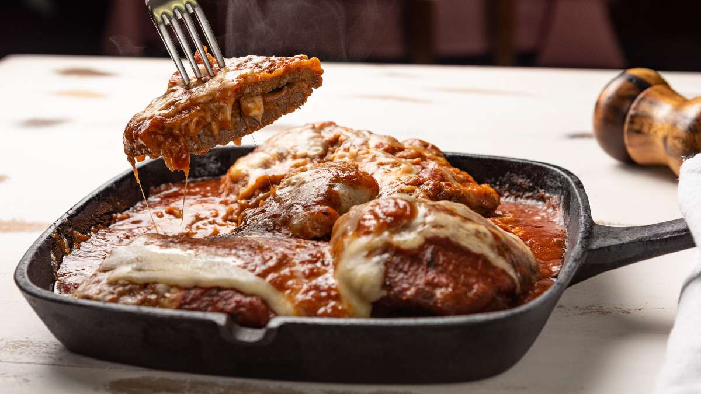

Conheça os pratos mais tradicionais de São Paulo!
Bife à Parmegiana

- 2 Duckbeefs - bifes de Patinho
- Sal e pimenta a gosto
- Queijo muçarela e parmesão
- Tomate pelado, cebola e alho
Bolinho de Chuva
- Farinha de trigo, açúcar e fermento
- Leite e ovos
- Açúcar e canela para polvilhar
Bauru
- Pão francês
- Queijos prato, estepe, gouda e suíço
- Rosbife e tomate
- Picles de pepino
Coxinha
- Frango desfiado e temperado
- Massa de trigo e caldo de galinha
- Leite, farinha de rosca e óleo para fritar
Aprenda a fazer uma coxinha paulista deliciosa!